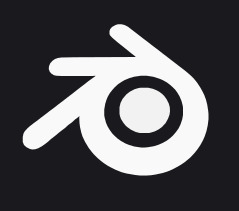
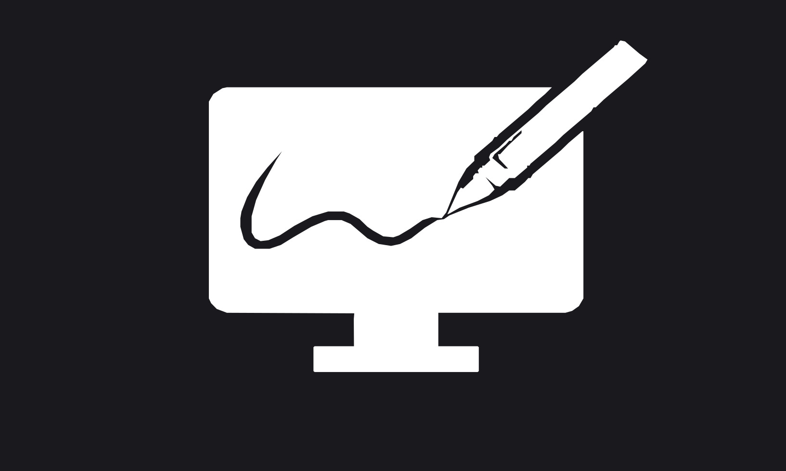

Sobre mí
Estudiante de Ingeniería en Diseño Multimedia, especializado en Modelado 3D y Fotografía Digital con experiencia en Desarrollo Web.
Mi enfoque profesional une la creación de contenido visual de alto impacto con la arquitectura de aplicaciones funcionales, buscando integrar capacidades técnicas y artísticas en proyectos que desafíen la interacción digital.
Habilidades
- Manejo y optimización de topología de mallas
- Rigging y pesado de vértices para animación
- Composición, iluminación y Revelado Digital
- Maquetación web interactiva y diseño adaptable
Aplicaciones que sé usar
Blender
Unity Engine
Photoshop
Lightroom
Visual Studio Code
WordPress / Elementor
Educación / Formación
Ingeniería en Diseño Multimedia
Universidad Autónoma del Carmen (UNACAR)
En curso · Ciudad del Carmen, Campeche
Mi Portafolio

Fotografía
Fotografía de Naturaleza y Viajes
Algunas Fotografías independientes sobre la Naturaleza
Ver detalle →